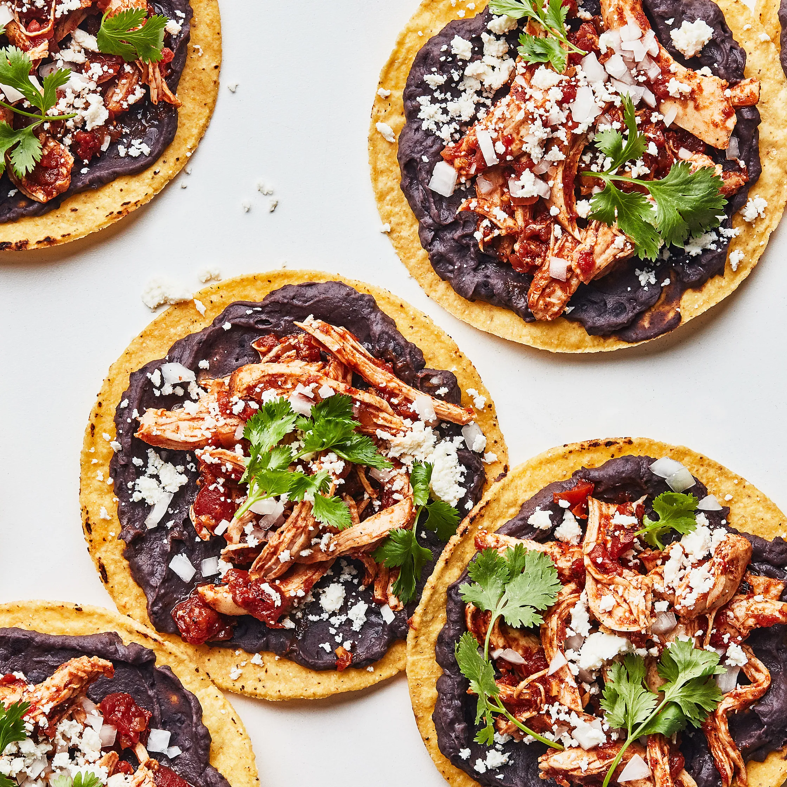

Black Bean Tostadas

Description
During busy weeknights, we can't get enough of quick, easy, and cheap dinners. With only 5 ingredients and less than 30 minutes, these black bean tostadas will have you serving up an easy and delicious vegetarian dinner on the table with hardly any work at all. These tostadas use ingredients you’re more than likely to have on hand, making them the easiest last-minute meal to throw together when you just can’t be bothered to cook up anything else. The best part? Because of their simplicity, these tostadas are endlessly versatile. Make them as-is for the most basic version, or use them as a base to add all your favorite seasonings and toppings.
Ingredients
- 2 cans black beans, rinsed and drained
- 8 tostadas
- shredded pepper jack
- avocado, sliced
- hot sauce
Steps
- Preheat oven to 350°. In a small saucepan over medium heat, add beans and 1 cup of water. Bring to a simmer and let simmer until beans are warmed through, about 10 minutes. Smash with a wooden spoon until most of the beans are smashed with some whole remaining. Add more water as needed to help create a smoother consistency.
- Meanwhile, place tostadas on a large baking sheet and sprinkle cheese evenly over each. Bake until cheese is melty, about 5 minutes.
- Top tostadas with beans, avocado slices, and hot sauce.
Back to Homepage